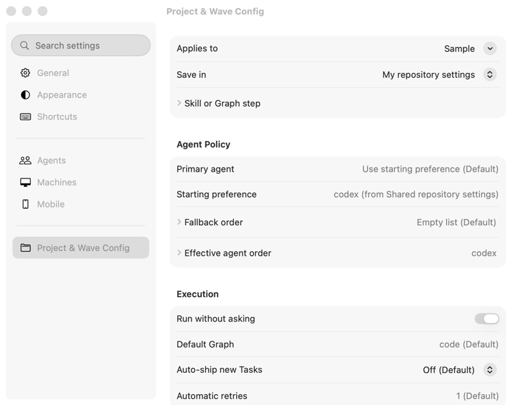
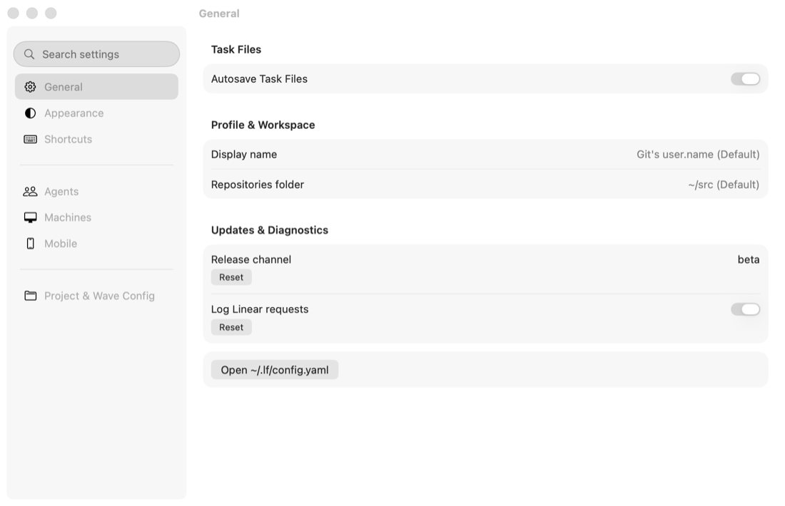
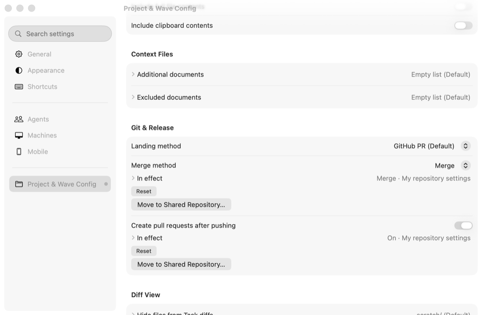

The branch app opened Settings on a disposable checkout named Sample. Resizing to the minimum produced a 760 × 592 pt window. WindowServer captured it in the background, so the title and sidebar selection have the inactive window appearance.
The search field, two dividers and full Project & Wave Config label fit alongside General.

The checkout and destination occupy separate rows. The starting preference and its shared repository source fit on one line.Searching for merge_method and pressing Return revealed the row with its full default choice.
QA round 6 · First Wave edit and the subscription checkpoint
Branch build of 031a057cd5, which changed two things: a first edit to a Wave that keeps its settings in GOAL.md frontmatter now rechecks the file it read from, and Desktop's subscription checkpoint became a closure. Private Machine /tmp/lf-qa-wv (own HOME, LF_HOME, branch lf server run). The disposable repository has two legacy Waves: scan (agent: codex, graph: code) and lint (agent: claude), both with no config.yaml. An isolated bundle with the QA hook was opened with open -n -g while someone was working on the unlocked display. Captures come from screencapture -l, so the window looks inactive.
Scenario
What I did and saw
Result
Read a legacy Wave
lf --wave scan config explain agent --shared --json: the Wave candidate is …/wave/scan/GOAL.md, selected, codex.
Works
No-op first edit
lf --wave scan config set agent codex --shared printed “agent saved”. .lf/wave/scan/ still holds only GOAL.md.
Works: the Wave stays in GOAL.md
Real first edit (CLI)
… set yolo true --shared created config.yaml with agent: codex, graph: code, yolo: true. GOAL.md was unchanged, and config scope then read agent: codex, yolo: true.
Works: identity and preferences adopted together
First edit over the socket
config.edit on shared_wave lint with a stale expected (yolo: true) was refused with conflict “yolo changed … refresh before editing”, and nothing was written. The same edit with expected: [] answered before: [] after: [yolo: true] and wrote agent: claude + yolo: true.
Works
Personal edits in Desktop
Toggling Log Linear requests wrote logs.linear_requests each time and showed “Saved Log Linear requests · Undo”. A hand edit adding stream: beta showed Release channel beta with Reset within 5 s. Reset removed stream from the file.
Works
Project edits in Desktop
“Create pull requests after pushing” wrote pr: true to .lf/config.local.yaml, and git status stayed clean. A hand edit adding merge_method: rebase showed “Rebase · My repository settings” with Reset and Move to Shared Repository…
Works
Server restart, then edit
I killed the server and started it again. 25 s later a hand edit (merge_method: merge) reached the open pane, and Reset then wrote the file back to pr: true.
Works

A hand edit of stream reaches the open General pane.

After the server restart, the project pane follows a hand edit by itself.
Still wrong (not from this change, and the same on released 0.16.0): lf --wave scan config explain agent without --shared fails with “Wave scan needs its authored id before private settings can follow it through renames”. Explain defaults to the personal destination, which a Wave without an id cannot have. I didn't reach the race where config.yaml appears partway through an edit on the real path. first_edit_rechecks_the_source_of_the_wave_settings covers it.
Cleanup: app and private server stopped by PID, no holder or launchd job left, bundle unregistered and deleted, hook reverted.
QA round 5 · Automatic reconnect and declaration edits
Branch build of e753cd0c45 (fresh cargo build -p loopflow --bin lf; the earlier binary predated the last commit's Rust change). Private Machine /tmp/lf-qa-1066 (own HOME, LF_HOME, branch lf server run), disposable repository with shared default_agent: codex, yolo: true. Isolated bundle com.loopflow.mac.qa1066.dev with .lf/qa/QAHook.swift, removed afterwards. The screen was locked (idle ~58 min), so Forms were read as text with views/tree. Rounds 1–4 are in git history.
Scenarios
Scenario
What I did and saw
Result
Open Project & Wave Config
menu Settings…, search “Project & Wave”, Return. Rows: Use starting preference (Default), codex (from Shared repository settings), On · Shared repository settings, Save in My repository settings, file path …/repo/.lf/config.local.yaml once at the bottom.
Works
Server killed with the project pane open
kill <server pid>. Within 6 s the pane's header read “Loopflow server unavailable or owned by another account”; every row kept its last value.
Works (wording below)
Server restarted, project pane
Started lf server run again and polled tree. The unavailable line cleared 11 s later with no Refresh, close or reopen. Set agent to claude: config.local.yaml got agent: claude, row placeholder became claude (from My repository settings), the repository's git status stayed clean.
Works
Server restarted, personal pane
Searched default_agent → Agents. Killed and restarted the server: reconnected after 16 s. Set Default agent to claude → $LF_HOME/config.yaml gained default_agent: claude; the project pane's override row now read claude (from My global preferences).
Works
Edit while disconnected
Server down, typed codex into Default agent's starting preference and pressed Return. Nothing written, field stayed empty. After the restart the same edit wrote agent: codex.
Works: edits pause, nothing half-written
Compact window geometry
size 1 700 480 clamps to 760×592. Sidebar wrapper spans 0–228 pt, form sections 248–740 pt; search field and every row sit inside them, no overlap.
Geometry sound; pixels unchecked
Checks
cargo build -p loopflow --bin lf: built. No tests rerun: the real path covered what this round asked.
Cleanup: QA app quit, private server stopped by PID, no launchd job or holder left, bundle unregistered and deleted, hook reverted.
Fixed
.lf/qa/desktop.md: the note said a restarted server needs close 1 + menu Settings… or Refresh; replaced with the automatic reconnect and how to time it, and added the locked-screen geometry read for the compact window.
Couldn't reach
The screen was locked during round 5. The compact window review above shows the forms after unlocking.
Undo from the notice: hook clicks don't reach it while the window is never key (unchanged from round 4; ContextSettingsWorkflowTests covers it).
Still wrong, worst first
During a plain server restart the pane says “Loopflow server unavailable or owned by another account”. Ownership is never the cause here, and nothing says it is retrying. The string is ServerClient.swift:305's shared error, used beyond Settings; left as is.
Not from this change: a user config with an unknown key (auto_ship) printed the same “skipping auto_ship: unknown setting” warning 14 times for one lf task create.